Susanne Uhl
Kostümbild
Theater
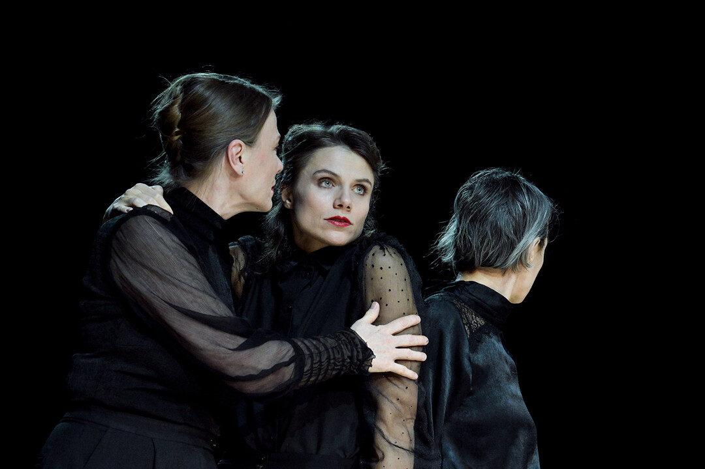
Der Komet – Staatsschauspiel Dresden (2025)
Foto: Sebastian Hoppe
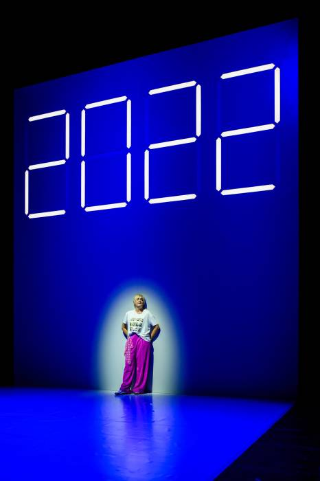
Dumme Jahre – Nationaltheater Weimar (2024)
Foto: Candy Wels
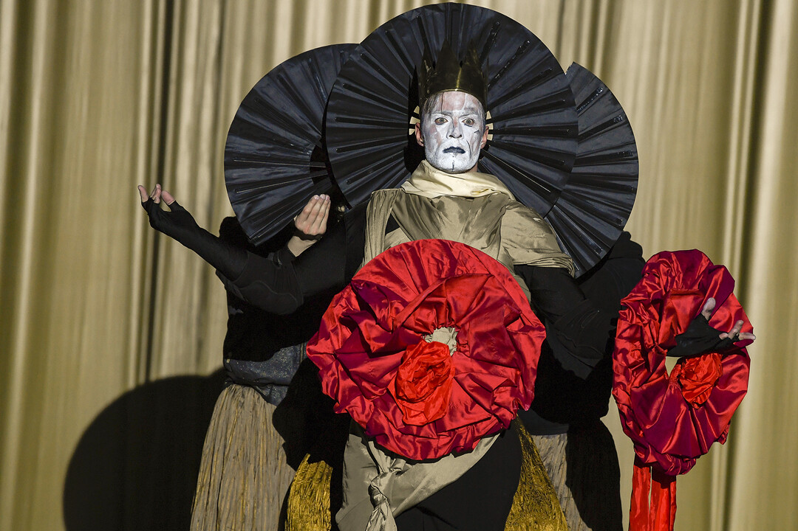
Das Leben ist ein Traum – Staatsschauspiel Dresden (2023)
Foto: Sebastian Hoppe
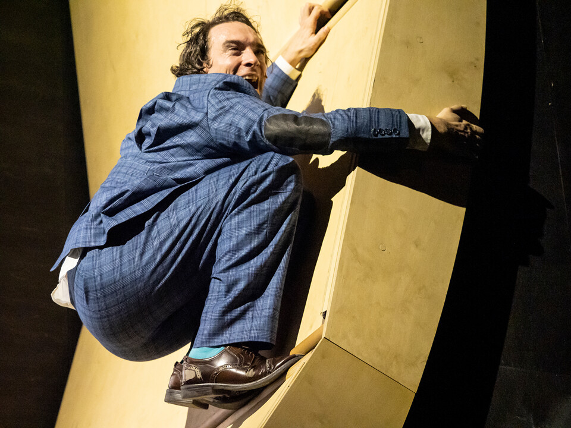
Kleiner Mann was nun – Düsseldorfer Schauspielhaus (2021)
Foto: Thomas Rabsch
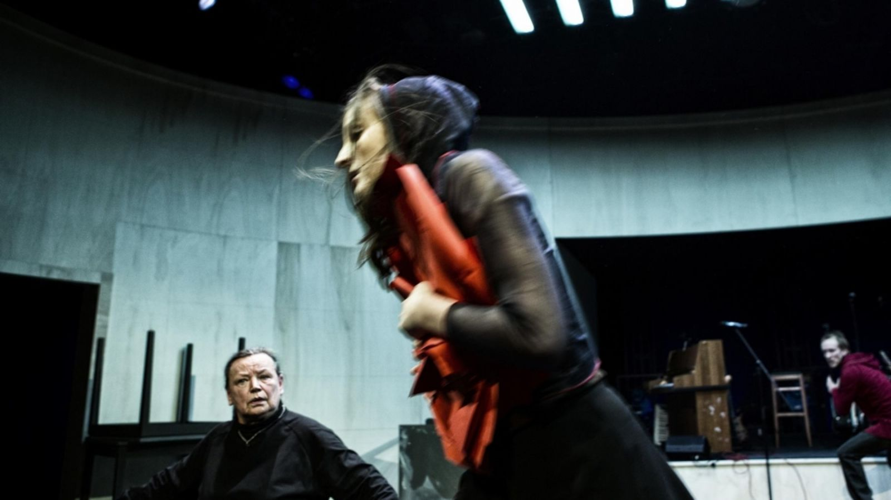
Die Mutter – Schaubühne Berlin (2016)
Foto: Gianmarco Bresadola
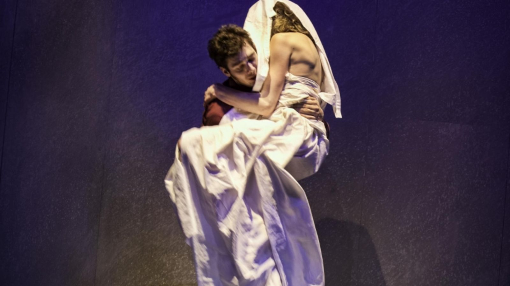
Fabian - Der Gang vor die Hunde – Schaubühne Berlin (2015)
Foto: Gianmarco Bresadola
Oper
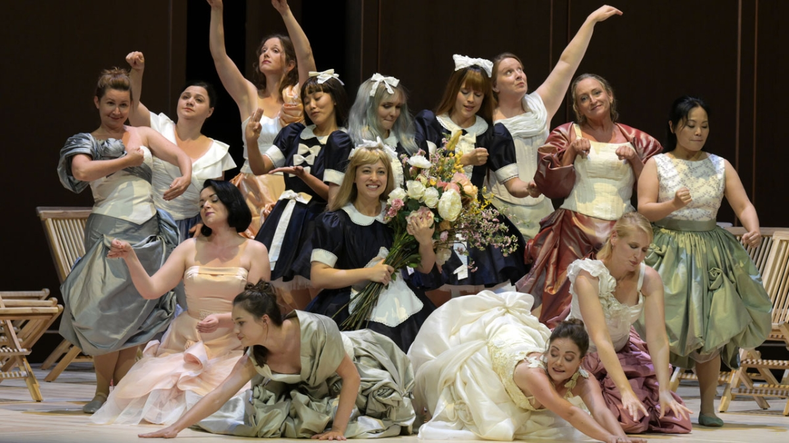
Le Nozze di Figaro – Oper Frankfurt (2023)
Foto: Barbara Aumüller
Undine – Oper Leipzig (2022)
Foto: Kirsten Nijhof
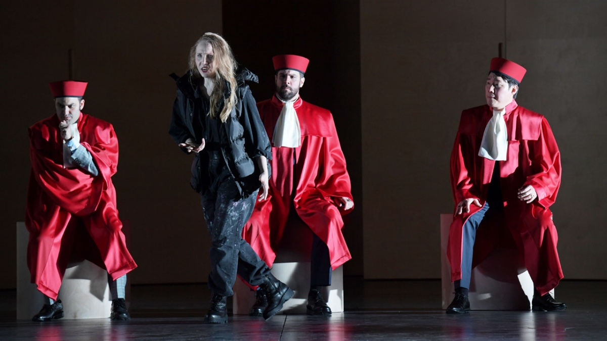
Bianca e Falliero – Oper Frankfurt (2022)
Foto: Barbara Aumüller
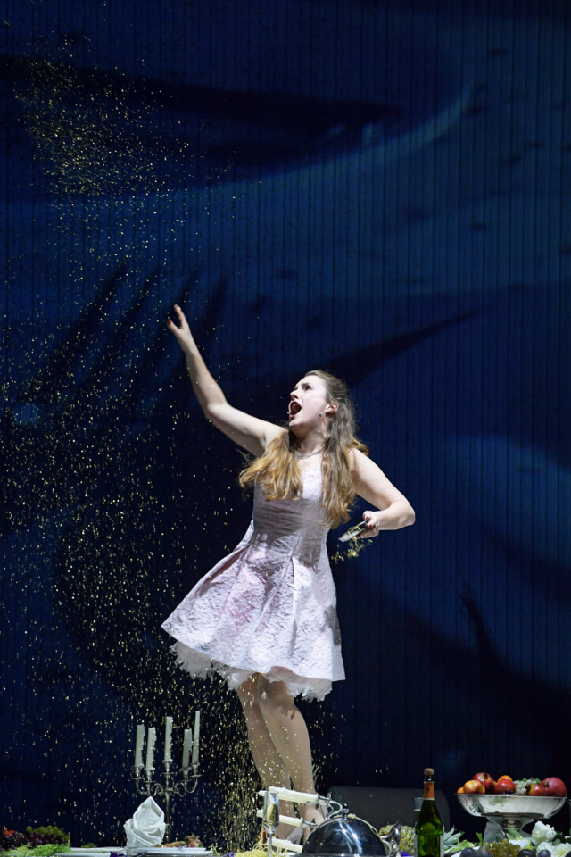
Xerxes – Oper Frankfurt (2017)
Foto: Barbara Aumüller
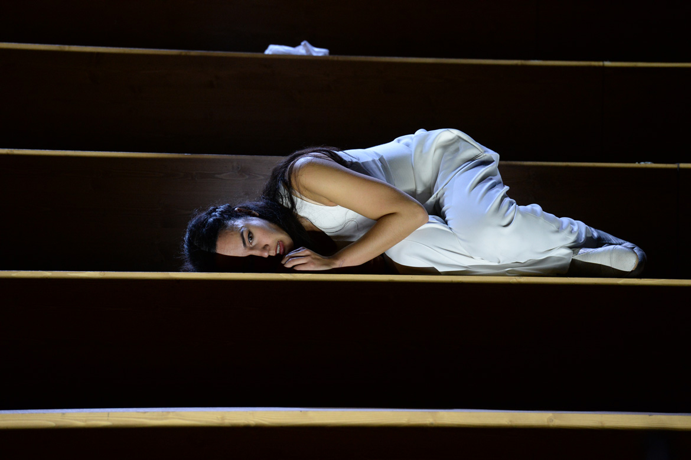
Radamisto – Oper Frankfurt (2016)
Foto: Barbara Aumüller
Film
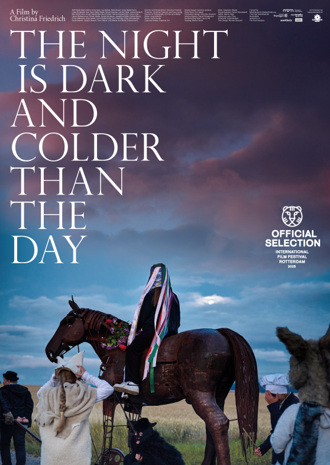
DIE NACHT IST DUNKEL UND KÄLTER ALS DER TAG (2024)
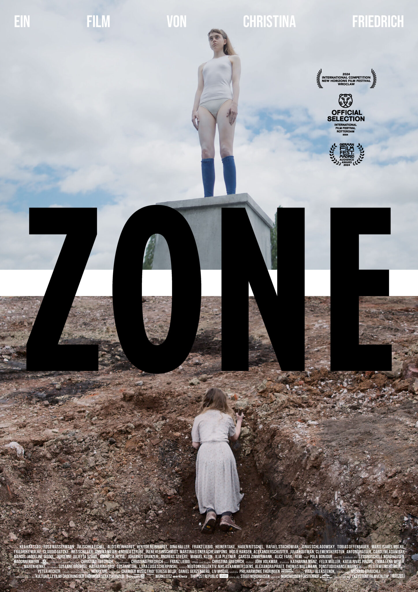
ZONE (2020)